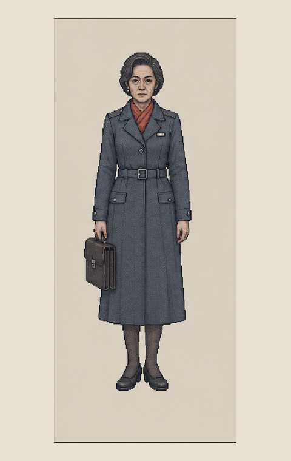
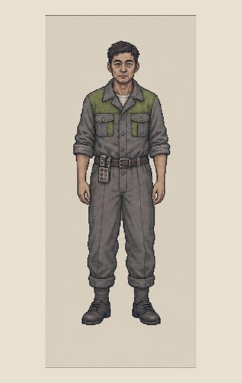

PUBLIC URGENCY
杜春梅
慢性病与医院急件均有效。她不是“更善良”的申请人，只是会承担资源被移走的直接后果。
最后一宗案件没有伪造、过期、错字或越权。一张主管保障券完全合法；兑付它，却会夺走杜春梅等待的最后一个医疗验收位。
高层申请人可以不认识杜春梅，也不知道自己正在占用谁的资源；制度位置本身已经完成选择。
慢性病与医院急件均有效。她不是“更善良”的申请人，只是会承担资源被移走的直接后果。

监察玩家是否有材料依据。她既可能阻止越权，也可能为严格记录留下申诉缝隙。

负责让系统中的资源数字落到现实。他知道每一次“顺延”最终落在哪个家庭。
如果设计者在材料里藏一个简单错误，玩家只是在解题，并没有面对价值冲突。V-01 的身份、住所、签发机关、资源类别和兑付次数都应正确；唯一无法被表单消除的是，批准后谁会失去资源。
图中没有“错误节点”。冲突只来自资源不足与效力顺序。
选择一种处理方式，查看它在程序、人物和证据层面的后果。
所有材料均有效。玩家按手册完成兑付，高层申请人取得最后一个医疗验收位；杜春梅的申请被系统顺延。
玩家只有真正保留、核验并连接过证据，才有能力把价值判断转化为行政依据。
夜间线路和污染区域的在场证明，使早期事故时间更可信。
证明机器时间与自动排序并非天然中立，也不是不可人工复核。
证明新修订页可能服务于隐瞒，而不只是一次中性的技术更新。
书签、旧页、副本和越过机器的决定，最终都会成为监察材料。
同一个玩家可能程序完整、证据丰富，却仍然造成大量公共伤害。
程序低、证据高、人物信任高。玩家可能保住具体的人，却很难继续留在制度内。
程序中高、证据高、伤害中。玩家利用复核、例外和旧页争取有限空间。
程序低、证据不足。玩家做出善意决定，却无法让决定稳定产生后果。
程序高、监察风险低、公共伤害高。日报看起来最漂亮。
最后一案的力量来自它无法被传统找错玩法轻易化解。
不要在保障券上藏一个简单伪造错误。
不要把高层家属写成故意抢救命资源的漫画式恶人。
不要提供一个没有等待、风险或证据要求的完美第三选项。
不要只用结局旁白评判玩家，应展示资源、人名与档案状态。